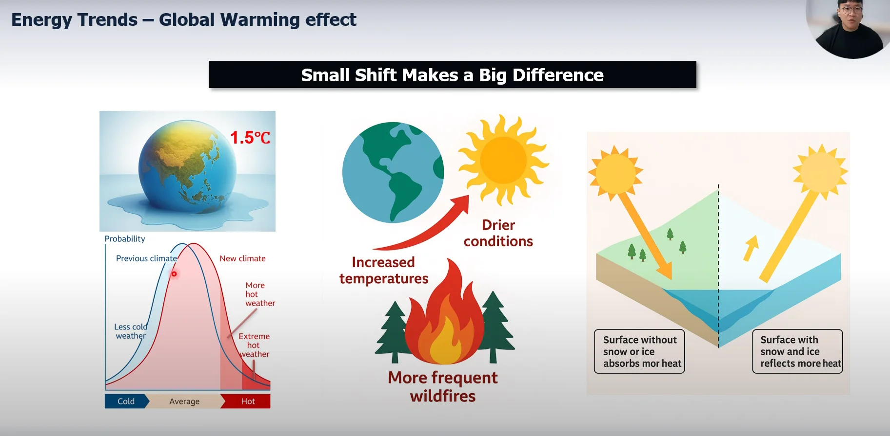
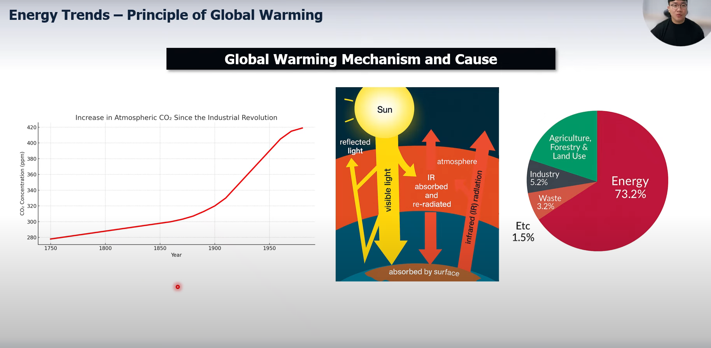
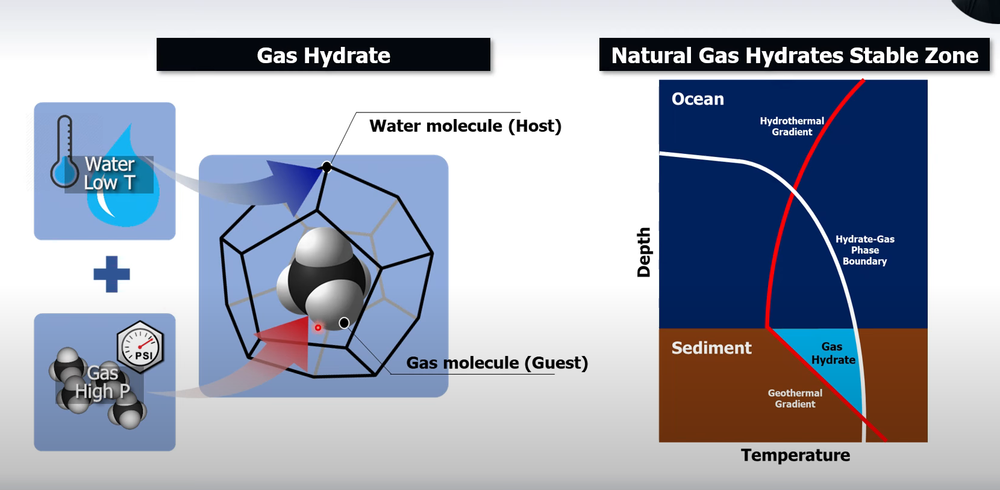
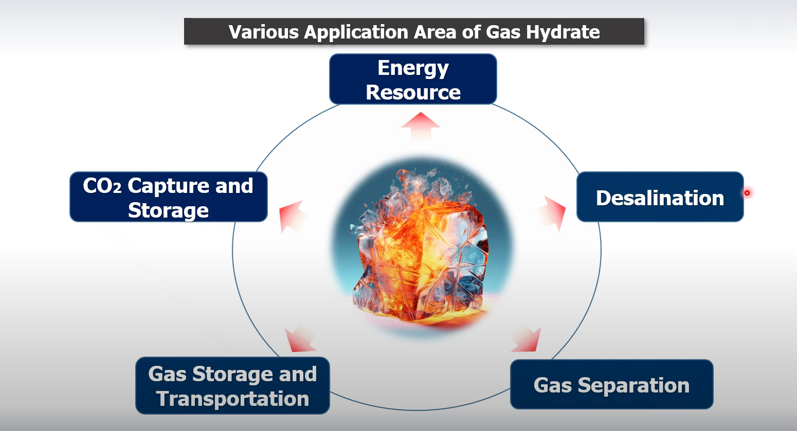
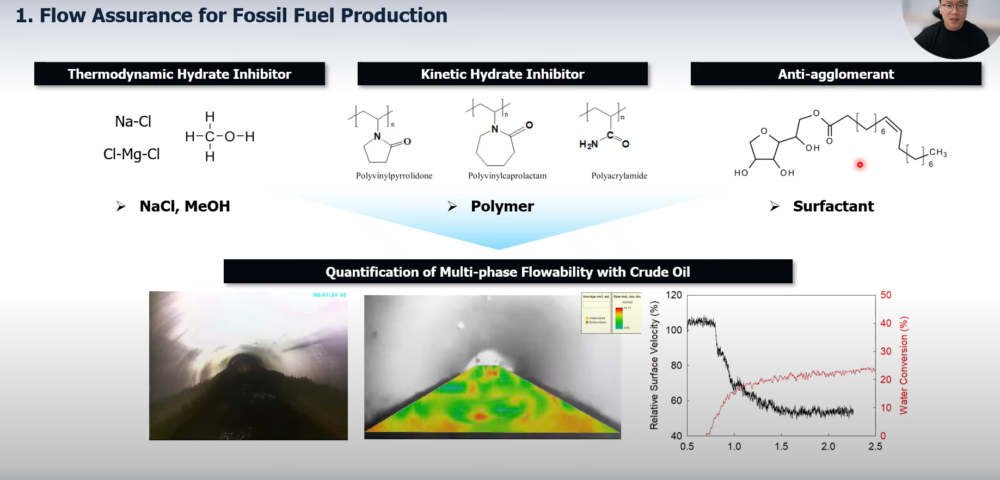
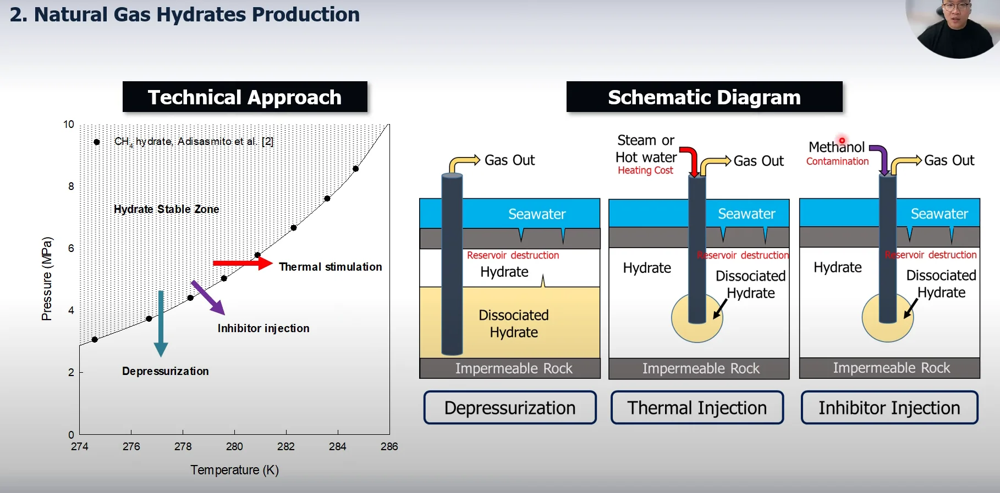
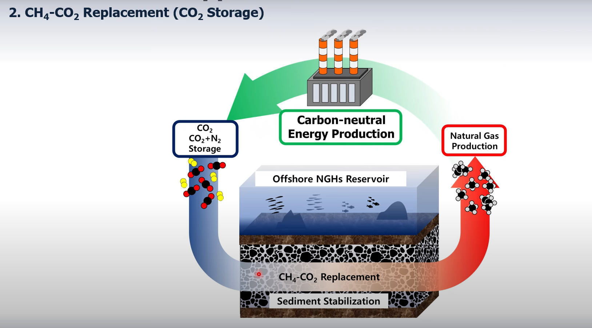

12. 친환경 에너지 생산을 위한 가스 하이드레이트 기반 연구 by 최원중 교수
(저장용 속기록이며 오타와 씹힌 발음 매우 많음..)
----------------------------------------------------
안녕하십니까? 저는 국립창원대학교에너지 화학공학과의 조교수로 재직중인 최원중이라고 합니다.
오늘의 화학공학 인사이드에서는 제가 연구하고 있는 친환경 에너지 생산을 위한 가스 하이드레이트 기반 연구들에 대해서 소개를 드리고자 합니다.
본격적인 연구 분야에 들어가기에 앞서
왜 우리가 친환경 에너지를 개발해야
하는지 간략하게 한번 알아보도록
하겠습니다.
우리가 지구온화가
심각하다고 언급은 자주 하지만 사실은
그 온도 변화가 체감할만큼 크지 않고
8 협약에서 자주 언급되는 1.5도
상승 역시 얼핏들었을 때는 심각해
보이지 않을 수 있습니다. 하지만
여러분이 주의할 부분은 날씨와 기후는
다르다는 것입니다.
아래 그림은 평균 기온 대비 날씨가 발생할 확률을 보여줍니다. 대부분의 표준 분포표와 같이 평균 기온인 날씨가 가장 많고 온도가 낮거나 높을수록 그 발생률은 낮아지는 것을 알 수 있습니다.

여기서 지구의 평균 기온이 상승한다는
것은 해당 도표 전체가 오른쪽으로
이동한다는 것을 의미하고이는 약간의
온도 상승만으로도 기존의 폭염에
해당하는 날씨가 발생할 확률이 두 배
가까이 증가한다는 것을 확인할 수
있습니다.
이렇게 온도가 상승할 경우
대기가 건조해져서 산불의 빈도가
늘어날 수도 있고 또한 빙화의 해리로
인해서 지구 전체도가 감소해서 온도가
더욱 상승하는 네거티브 피드백이
발생할 수 있어서이를 막기 위한
연구가 시급하다고 할 수 있습니다

지구나의 주요 원인으로는 이상한
탄소와 같은 온실 기체가 가장 큰
원인으로 지목되고 있습니다. 실제로
산업화를 거치며 대기 중 이산화 탄소
이상화 탄소 농도가 매우 가게 증가한
것을 확인할 수 있습니다.
지구온난화 메커니즘에 대해 간략히 말씀드리자면 태양으로부터 지구에 흡수된 빛은 일부는 흡수되고 일부는 다시
반사되며이 에너지 균형을 이르게 줍니다. 하지만 이상한 탄수와 같은 온실 기체는이 적외선 파장에 해당하는 빛을 흡수하는 물질로서 지구에서 우주로 방사되는 열 적선을
다시 지구로 흡소시켜서 이런 에너지
어 균형을 무너지게 만듭니다. 특히이
이상한 탄소 발생량이 70% 이상이
에너지 산업 분야에서 발생하고
있으므로 어 지구나를 막기 위해서는
친환경 에너지의 개발이 가장
중요하다고 할 수 있습니다.
현재 화성 연료는 전 세계 에너지
소비량의 80% 이상을 담당하고
있으며 점차 증가하는 에너지 수요를
감당하기 위해서는 태양과 폭력과 같은
신재생 에너지로의 급격한 전환은 매우
어렵다고 할 수 있습니다. 따라서
화성 연료를 친환경으로 사용하기 위해
연소후 배출되는 이상 탄소를 포집하여
처리하는이 카본 캡처인 스토리지역
CCS 기술이 활발히 연구되고
있습니다.
배출되는 막대한 양의
CO2를 저장하기 위해서는 누출
가능성이 낮은 적절한 저장소가
필요하며 어 우리나라에서는 2021년
고갈된 동해 가스전을 활용해 이상
탄소서를 저장하는 심층 프로젝트가
기획되고 있습니다.
비록 동해의 천연 가스는 고갈되었지만
막대한 양의 천연 화성 연료가
천연가스 하이드레이트 형태로 매장되어
있으며 어 차세대 에너지원으로
개발하기 위해 다양한 연구들이
수행되고 있습니다.
아마 여러분은
일본과의 영해분쟁 관련 기사에서 많이
보셨을 텐데요.이 이 천연가스
하이크리트가 어 낯선 물질이기 때문에
어떤 자원이며 어떤 성질을 가진
물질인지 간략히 설명드리도록
하겠습니다.

가스 하이드레이트는이 저온의 물과
고압의 기체가 만나면 생기는 결정질
물질로서
케이지 형태의 얼음격자 안에 기체 분자가
포집된 형태입니다.
저온 고압의 환경에서 안정적으로
존재하기 때문에 지열의 영향이 적은
심해저 첨부 지층에 이렇게
하이드레이트가 형성되게 됩니다.
천연가스 하이드레이트는 저은 고압
조건인 대륙연안 해저 영역과 연구
동토층에 주로 분포하며 어 전 세계
고르기에 분포하고 있습니다.
천연가스
하이드레이트의 총량은 기존에 알려진
화성연료 총량의 두 배에 해당하는
양으로 막대한 양이 존재하여 차세대
에너지원으로 기대되고 있습니다.
천양가스 하이드레이트라는 에너지원
자체로서 활용될 수 있지만 가스
하이드레이트 형성시 부피 대비 높은
기체 포집량과 선택도 차이를 활용해서
이산화탄수 포집 및 저장 기체 소송
기체 분리 분야에 주로 적용할 수
있으며 어 또한 결정화 반응을 통한
담수와 연구에 적용하는 등
하이드레이트 형성 원리는 다양한 산업
분야에 적용될 수 있습니다.

지금부터 하이드레이트 관련 연구들에
대해 소개하도록 하겠습니다. 어 가스
하이드레이트 관련요 연구가 가장 먼저
시작된 분야는 아이러니하게 더 화석
연료 생산 분야입니다.
앞서 설명한
바와 같이 해저 영역에서는 물과 천연
가스가 존재할 경우 하이드레이트가
형성되기 쉽습니다.
따라서 해저
육역에서 원유및 천연 가스를 생산한
경우 배관에서 이런 고체상
하이드레이트가 형성될 수 있으며 이런
입자가 응집되게 되면 배관 막힘
현상을 유발해 폭발 및 화제와 같은
심각한 사고를 유발할 수 있습니다.
이
이를 방지하기 위해 저은 고압의
연력학적 환경에서 하이드레이트 향성을
방지하는 억제 및 유동 향성 연구가
빨리 수행되고 있습니다.
배관내 유체 유동성을 확보하는
연구에서는 하이드레이트가 형성될 수
없도록 안정 영역 자체를 이동시키는
다이나믹 하이드레이트 이니터 그리고
하이드레이트 형성 시점을 놓추는
키네틱 하이드로트 이니터 그리고
하이드레리트가 형성되더라도 입자를
분산시켜서 유동성을 증정시키는
응집방지제 안티어머런트와 같이 크게
세 가지 적분법을 사용하고 있습니다.

뭐 동영상에서 보시다시피 고상의
하이드레이트가 형성되면 유동성이
급격히 저화되는 것을 볼 수
있습니다. 어 기존의 연구에서는 다상
유체의 형태랑 어 플러 정도를 리스크
매트릭스의 형태로 정성적으로만 분석해
왔다면 저희 연구실은 어 실제 시접
파이프라인을 모사하고 가스
하이드레이트 물이 공존하는 환경에서
다상 육체의 유동성을 관측하고 이렇게 정량화하는 연구를 수행하고 있습니다.

또한 막대한 양의 천연 가스
하이드레이트를 차세대 에너지원으로
활용하기 위해 다양한 생산기법들이
연구되고 있습니다. 압력을 강화시키는
강화법, 열수를 주입해 하이드레이트를
녹여서 생산하는 열수 주입법 그리고
메탄올과 같은 연력학적 저회제를
주입해 해리시켜 생산하는 저회제
주의법 등이 있습니다.
이러한
기법들은 모두 하이드레이트 력합적
안정력 밖으로 이동시켜 회리하는
방법으로 생산성은 높지만 집안
안정성을 저화시킬 수 있다는 단점을
가지고 있어서이를 해결하기 위한
요구들이 다양하게 수행되고 있습니다.
특히 감화법의 경우 가장 생산성이
높은 방법으로 알려져 있지만 지층의
온도에 따라서 드라이 포스가 바뀌기
때문에 압력에 따른 생산 고동에 측기
어렵다는 한계가 있었습니다.
따라서
저희 연구실은 기존의 압력 기반
드라이브 포스 대신에 케미컬 포텐셜에
기반한 어 드라이브 포스를 사용하면
지층 온도에 무하게 유니버셜하게
생산할 수 있음을 제시하였으며이를
가스 하이드레이트 지층 모사 반응을
이용해 실험적으로 검증한 바
있습니다.
또한 실험실에서 제조하는 인공적인
하이드레이트는 실제 지층내 구존하고
있는 실효는 물성이 다를 수밖에
없습니다. 따라서 저희는 북극 탐사에
직접 참가하여 실제 하이드레이트 함유
지층을 채취하였으며 어 라만,
PXRD, NMR 등과 같은 공간
분석법을 이용해 물류학적 특성을
규명하는 연구를 수행하였습니다.
해당 연구를 통해 이제 북극 척취에
부전하는 천연가스 하이드레이트와 함유
지층의 특상을 분석하였으며이
하이드레이트의 포화도와 비정상적인
연도 분포 그리고 이로 인한 어
지구온화로 인한 해리거동 등을 규명한
바 있습니다.
어 앞서 말씀드린 화성 연료 관련
연구들과 가스 하이드레이트는 결정
형성 원리를 이용해 친환경 산업에도
적용할 수 있습니다. 앞서
말씀드렸다시피 어 가스 하이드레이트
형성시 물분자가 예술소속 결합을 하며
KG 형태의 격자 구조를 만들고 기체
분자를 호집하는 형태로 형성됩니다.
이때 어떤 기체를 호집하냐에 따라
결정 구조가 형성 결정 결정 구조가
결정되고이
구조를 구성하고 있는 동공의 종류랑
비율에 따라 각기 다른 기체 선택도를
가지게 됩니다. 특히 이사탄소 같은
경우 객체 선택도가 매우 높기 때문에
혼합 기체를 물과 함께 가압한 이후
형성된 하이드레이트를 분리하게 되면
혼합 기체를 친환경적으로 분리할 수가
있습니다.
에너지 산업에서 이상한 탄소를
처리하는 방법은 크게 포스트
컨버스천과 프리컨버스천으로 나눌 수
있습니다. 포스 콤보스처는 기존의
화력 발전소에서 연서후 나오는
백가스를 처리하는 방법으로 어 이상한
탄소 질소 혼합체에서 이상한 탄소를
분리하는 것을 말합니다.
가사이드레이트 기반 기치 분리
공정에서는 질소 대비 이산화 탄소의
선택도가 매우 높아서 활발이 연구되고
있는 분야입니다.
프리콤버스천은 화성 연료를 수소로
전환하는 과정에서 생산되는 가스로 어
에너지 밀도를 높이기 위해서는
60%에 해당하는 이상한 탄수를
분리하는 것이 필수적입니다.
마찬가지로 수소 대비 이상한 탄소서의
선택도가 매우 높고 또한 기체 생산
압력 자체가 높아서 하이드레이트 기반
분리 공정이 굉장히 유리해서 혈발이
연구되고 있습니다.
이뿐만 아니라 동남아시에 존재하는
이상한 탄소가 높은 이상한탄소의
농도가 높은 천연 가스 또는 이런
바이오가스의 에너지 밀도를 올리기
위해 어 메탄 이상한 탄수 혼합
기체에서 이상한 탄수를 분리하는
연구도 활발히 진행되고 있습니다.
특히 본 연구 팀에서는 하이드레이트
형성시 필요한 온도 압력 조건을
완화시키기 위해서 연력학적 촉진제를
사용했고이 결정 구조가 변화에함에
따라 동공별 객체 부직 포동이
변화하는 것을 실시간으로 규명해서
최적 분리 시점을 제시한 바
있습니다.

다음 소개해드릴 연구 분야는 메탄
이사 탄소 치환 기술입니다.
막대한 양의 천연가스 하이드레이트는
천연가스 하이드로이트에서 천연 가스를
생산해서 에너지원으로 활용하고 연속
또는 리포밍 후 배출되는 이사탄소를
다시 지층에 주입하여 CO2
하이드레이트 형태를 저장한다면 이론상
탄소 중립에 가깝게 에너지를 활용할
수 있습니다.
특히 하이드레이트에
포집된 메탄과 이산화 탄소의 교환
반응은 어 연력학적으로 자발적인
반응이기 때문에 별도 별도의 에너지가
필요하지 않으며이 결정 구조를
유지하기 때문에 집안 붕괴로 인한
피해도 막을 수 있는 매우 혁신적인
방법이라고 할 수 있습니다.
천연가스 하이드레이트에서는 포집된
기차의 기체 분자의 종류에 따라서
S1, S2, SH이 총 세 가지
구조로 존재하며 각기 다른 연력학적
안정성과 동공비를 가지고 있습니다.
따라서 저희는 그중 S2 구조와 SH
구조 하이드레이트에 정재된 CO2
대신에 연소 연소가스를 직접 주입해서
기체 분리 과정에서 소모되는 에너지를
줄이고자 하였으며 어이 CO2N2
주입시 일어나는 치환 효율의 변화
원리를 실시간 객체 교환 거동과
구조전위 거동을 통해 어
규명하였습니다.
또한 주입하는 기체 조성의 변화에
따른 CO2N2 포집 거동을
규면하였으며이 피드가스 조성의
최적화를 통해 시환 효율의 극대화를
이룰 수 있으는 실험적으로
검증하였습니다.
하지만이 치환기법의 경우 느린 기체
확산 속도로 인해 상업화가 어렵다는
단점이 있었습니다. 따라서 저희 연구
팀은 감화법의 빠른 천연가스 생산
속도와 치원 기법의 이상탄수 저장 및
지층 안정화 효과이 장점을 모두
활용하고자 두 방법을 연계한 감압
치원 하이브로브로이드 기법을
개발하였으며
어 하이드레이트 함유 지층을 모사한
반응에 실제로이 기술을 적용해서 탄수
중립에 가까운 이사 탄소 저장 및
천연가스 생산 효율을 달성할 수
있음을 어 실험적으로 검증하였습니다.
입니다.
현재 저희 연구실은 앞서 말씀드린
하이드레이트 기반 저탄소 에너지 기술
연구를 위해 고압 교반기와
락플로우셀, GC, 시린지 펌프와
같은 다양한 장비를 구축 완료하였으며
어 부족하지만 나름 MG로서 학생들과
허목한 분위기에서 연구를 진행하고
있습니다.
어, 지루하셨을 텐데 긴 시간 경청해
주셔서 감사드리며 혹시 공동 연구나
저희 연구실에 관심이 생기신 분은
아래 이메일로 연락 주시기 바랍니다.
이상으로 발표를 마치도록 하겠습니다.
감사합니다.